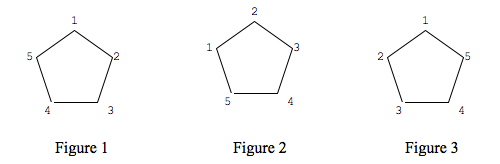

SIENA COLLEGE
28th Annual High School Programming Contest
March 27, 2015
Problem #3: Polygon Labeling
Background Information: There are (n-1)! ways to uniquely label the vertices of an n-gon. If any labeling of an n-gon can be rotated to match a previous labeling, the labeling is not unique. However, a labeling is unique, even if a reflection (or reflection followed by a rotation) of the labeling matches a previous labeling. For example, Figures 1 and 2 below are not uniquely labeled but Figures 1 and 3 are uniquely labeled.

The Automated Testing Company needs a program that will input two lists of integers and determine if the second is (or is not) a cycle of the first. If the second is a cycle of the first, then the two would not uniquely label an n-gon. Each list will contain between 3 and 20 positive integers. . Obviously, if different integers are used for the labeling, there is no cycle. The program will output the appropriate message of either CYCLE or NO CYCLE.
Programming Problem:
- Input: A pos. integer 3 <= n <= 20 for the size of the n-gon followed by two labeling lists.
Each list will consist of n positive integers.
- Output: Either "CYCLE" or "NO CYCLE".
- Example1:
- Input: 3
1
2
3
2
1
3
- Output: NO CYCLE
- Example 2:
- Input: 4 1 2 3 4 3 4 5 6
- Output: NO CYCLE